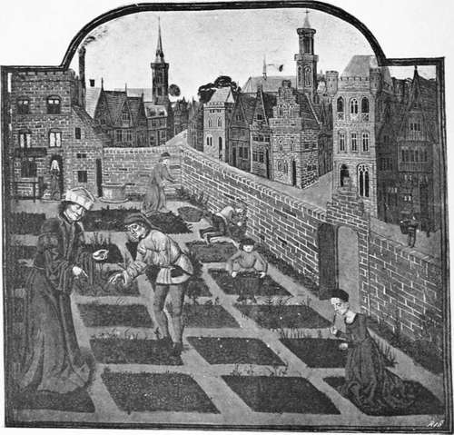

Thirteenth Century. Part 2
Description
This section is from the book "A History Of Gardening In England", by Alicia Amherst. Also available from Amazon: A History Of Gardening In England.
Thirteenth Century. Part 2
Besides the royal gardens at Westminster, Charing, and the Tower, there were others around London. We get a glimpse of the smaller gardens belonging to the citizens, from a description of the town by FitzStephen in his life of Thomas a Becket, whose contemporary he was. The passage (translated) runs thus :—" On all sides outside the houses of the citizens who dwell in the suburbs, there are adjoining gardens planted with trees both spacious and pleasing to the sight." The only other large garden near London, not belonging to a religious house, of which there is any record, is that of Henry de Lacy, Earl of Lincoln, in Holbourne. There is an account of all the manors held by the Earl in the year 1295-6.* At all the places, lists occur of the produce sold, such as hemp, corn, beans, pulse, etc, but Holbourne appears to be the only garden of sufficient size to allow of the sale of any of its produce. At " Grante sete Manor," 7s. 4d. was paid for cutting and cultivating the vines, but at most of the other large manors, such as Thoresby and Pontefract, there is no mention of a garden at all. The Holbourne accounts are most interesting, and show the wages paid to the gardener and labourers, the number of gallons of verjuice made from the vines, and the large quantities of pears and apples sold; while other varieties, probably more choice than those grown in the garden, were purchased and sent to the Earl, and slips of apples and pears were bought to replenish the garden.
Garden in a town, from french ms. late fifteenth century. le rustican des profits ruraux. p. croissent. b.m. add. I9-72O.
Accounts of the Possessions of Henry de Lacy, Earl of Lincoln, 23 and 24 Edward I, Holburne ; William de Donyncton, Serjeant, renders his account at Holburne on the day of Saint Clement the Pope in the 25th year of the reign of King Edward before the same [Sir William de Nony] and for the same time [Michaelmas 23 to Michaelmas 24 Edw. I.]. Of £9 for pears, apples, and great nuts of the garden sold, the tithe being deducted. Of 2s. 3d. for cherries of the garden sold, the tithe being deducted. Of 8s. 9 3/4d. for herbs and " Jeritis " of the garden sold, the tithe being deducted. Of 6s. for beans of the garden sold, the tithe being deducted. Of 2o|d. for verjuice " in fobis," the tithe being deducted. Of 12s. 3d. for 49 gallons of verjuice of issue, the tithe being deducted. Of 3s. 2d. for roses sold, the tithe being deducted. Of 4s. 6d. for herbage of the garden, the tithe being deducted. Of 2s. 3d. for hemp of the garden, the tithe being deducted. Of 4s. 1 1/4d. for onions and garlick sold, the tithe being deducted. Of 2S. 6d. for little plants (plancettis or plantettis ?) of the vines sold. (There are also receipts for deer sold).
Expenses
52s, 2d. in the wages and robe of the gardener by the year.
And 60s. 8d. in the wages of the Serjeant by the year. And 10s. in the robe of the same. And 43s. 8d. paid to the Warden of the Gaol of Flet, for the yearly farm due to him. And 39s. 8 1/4d. in the stipends of divers [men] working in the garden, as well for the vines as for herbs, leeks, and other curtilages [and] for carrying and spreading dung. And 5s. 7d. in two bushels of beans [and] seed of hemp, onions, and garlic bought for planting. And 22d. in the stipend[s] of [men] helping to make verjuice with salt bought for the same. And 3s. 2 1/2d. " in 2 insitis de Rule, 2 de Martin, 5 de Caloel, et 3 de pesse pucele," bought for planting. And 2s. 6d. in mending the paling of the garden. And 44s. 4 1/2d. in one "kay" newly made for the support of the paling from the stable to the north head of the greater ditch in the garden. And 8s. 0 1/2d. in small fish, small frogs, and eels bought for the sustenance of the pikes (luporum aquaticorum). 27s. in 100 "caloels," 100 " pesse puceles," 200 " Rules," 300 " Martyns," [and] 300 " quoynz," bought and sent to the Earl at Ambr' (Amesbury, Wilts?) with the carriage of the same......17s. 0 1/2d; in 1500 onions [and] 1 1/2 load of garlic bought and sent to Camford: and 11s. in the carriage of the same.
* This very fine large roll, which consists of several sheets nearly 3 ft. long, and about 15 ins. wide, is preserved at the Record Office, Duchy of Lancaster Ministers' Accounts. Bundle 1, No. 1.
Many of the pears mentioned in this and other accounts appear to be of French origin. The "caloel" occurs in other places as " cailloel" for "caillou," a pebble, so called, let us hope, from its shape and not from its hardness. The "pesse," or "passe pucelle" is also evidently French. The " S. Rule" pear was probably named after St. Regolo, or Rule, who was Bishop of Aries, and first Bishop of Senlis. Rochelle, in France, was celebrated for its pears, and one year the Sheriffs of London imported some from thence to present to Henry III. Further information regarding these kinds of pears, and the prices paid for them, is to be gained from some other most interesting documents preserved in the Record Office. These papers are bills for the fruit bought for Henry III. and Edward I. at different times. The earliest is probably for the year 1223 ; the beginning of the document is missing, but it is dated in the seventh year of some king unnamed. From the internal evidence afforded by the names of places and dates, it appears that Henry III. is the king. He was still a minor, and his movements during the seventh year of his reign are uncertain, but the itineraries of all the other possible kings in their seventh year are known, and do not correspond with the dates in this document. The first entry is for April 20th, at "Pois," when six hundred apples, costing 12s., one hundred pears of " S. Rule," for 10s., and five hundred nuts for 2S., were brought from Paris. Henry was journeying towards England, and at each place, " Arenes," " Abeville," "Gart," and " Bolone," he was supplied with large quantities of fruit from Paris daily. On April 27th he was at Dover, and the apples, pears and nuts were still supplied daily until he reached London.* From a similar document for the year 1292-3, of which the following are extracts, the names of several other sorts of pears can be gathered.†
Continue to: